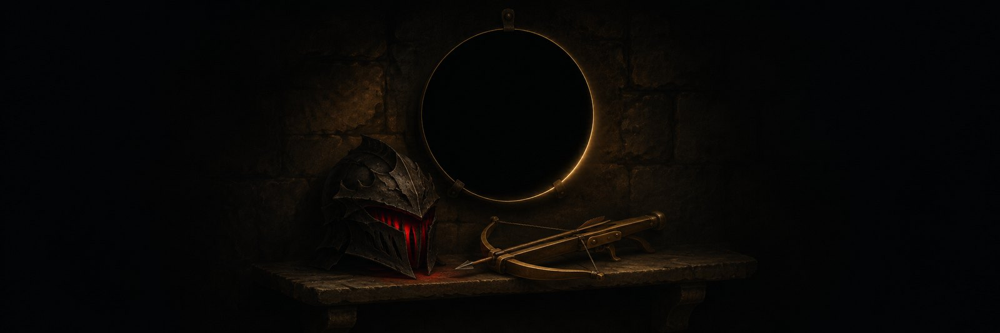

Mods
Mods for Demeo, the VR dungeon game. Each one says how well it has been played.

Untested with guests
The Enemy Within
Adds enemy heroes: monsters that use a player hero's real 3D model and that class's abilities. Host-only, so guests don't need it. Eight enemy heroes so far. Early release, not yet tested with a guest.
Waiting for play-testing
Treacherous Chests
Some chests are mimics. Written and audited, and held back until it has been played.
Installing
Close Demeo and copy the mod's DLL into BepInEx\plugins. Each release page lists exact steps, the game version it was built for, and a checksum so you can confirm the file.
Downloads will be linked from here once a build has been tested.